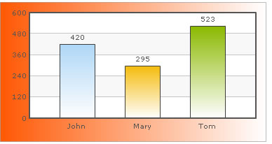

| Gradients | ||||||||
FusionCharts XT allows options to gradient fill for various chart elements like background, canvas, plot etc. You can now fill these chart objects using gradient patterns, whose properties can be decided and set by you. We will use the example of background and see how to apply gradients to background, as the background is common to all charts. The background of each chart can be configured using the following four attributes:
Let us now see how to apply a simple custom gradient to the background. We will create a gradient that starts from orange (#ff5904) and fades into white (#ffffff) and will be evenly distributed on the background. For a start, we will set the alpha as 100 for both the color constituents and set angle as 0 degree (left to right). The following data helps us do so: |
||||||||
<chart bgColor='FF5904,FFFFFF' bgAlpha='100,100' bgRatio='0,100' bgAngle='0'> <set label='John' value='420' /> <set label='Mary' value='295' /> <set label='Tom' value='523' /> </chart> {
|
||||||||
Here, we are first defining bgColor as a comma separated list of colors (hex codes without #) which we want our gradient to contain. Now for each color, we have to specify an alpha in bgAlpha attribute, again as comma separated values. When this attribute is defined as bgAlpha="80,50" and is coupled with bgColor="FF5904,FFFFFF", the color FF5904 will be shown in 80% alpha while the color FFFFFF will be shown in 50% alpha. Next, we have defined our ratio for the gradient fill as bgRatio='0,100'. When this attribute is defined as bgRatio="80,20" and is coupled with bgColor="FF5904,FFFFFF", the color FF5904 will occupy 80% of the gradient fill while the color FFFFFF will get 20%. As in bgAlpha, there needs to be as many ratio values separated by commas as there are colors in bgColor. Also, the sum of all the ratio values should be 100. By default, FusionCharts XT splits all the colors in the list proportionally, that is, if you have two colors and do not define this attribute, then both the colors will have 50% fill ratio. Finally, we set the angle of the gradient as 0 degree (left to right). When you now see the chart, you will get the following output: |
||||||||
|  | ||||||||
In this example, we only saw how to apply gradient to background. In 2D charts, you can apply gradients to chart canvas also. Moreover, in Column 2D and Area 2D charts, you can use plotGradientColor attribute to specify gradients for dataplot too. |